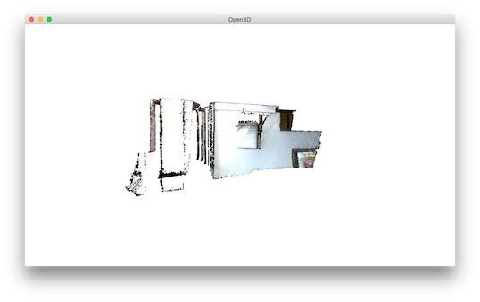
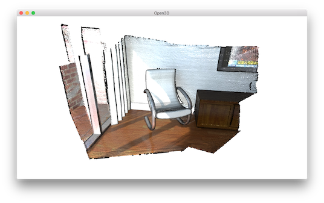
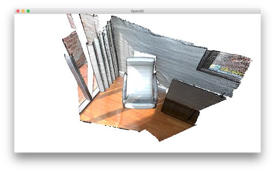

Visualization¶
5 6 7 8 9 10 11 12 13 14 15 16 17 18 19 20 21 22 23 24 25 26 27 28 29 30 31 32 33 34 35 36 37 38 39 40 41 42 43 44 45 46 47 48 49 50 | # examples/Python/Basic/visualization.py
import numpy as np
import open3d as o3d
if __name__ == "__main__":
print("Load a ply point cloud, print it, and render it")
pcd = o3d.io.read_point_cloud("../../TestData/fragment.ply")
o3d.visualization.draw_geometries([pcd])
print("Let\'s draw some primitives")
mesh_box = o3d.geometry.TriangleMesh.create_box(width=1.0,
height=1.0,
depth=1.0)
mesh_box.compute_vertex_normals()
mesh_box.paint_uniform_color([0.9, 0.1, 0.1])
mesh_sphere = o3d.geometry.TriangleMesh.create_sphere(radius=1.0)
mesh_sphere.compute_vertex_normals()
mesh_sphere.paint_uniform_color([0.1, 0.1, 0.7])
mesh_cylinder = o3d.geometry.TriangleMesh.create_cylinder(radius=0.3,
height=4.0)
mesh_cylinder.compute_vertex_normals()
mesh_cylinder.paint_uniform_color([0.1, 0.9, 0.1])
mesh_frame = o3d.geometry.TriangleMesh.create_coordinate_frame(
size=0.6, origin=[-2, -2, -2])
print("We draw a few primitives using collection.")
o3d.visualization.draw_geometries(
[mesh_box, mesh_sphere, mesh_cylinder, mesh_frame])
print("We draw a few primitives using + operator of mesh.")
o3d.visualization.draw_geometries(
[mesh_box + mesh_sphere + mesh_cylinder + mesh_frame])
print("Let\'s draw a cubic using o3d.geometry.LineSet")
points = [[0, 0, 0], [1, 0, 0], [0, 1, 0], [1, 1, 0], [0, 0, 1], [1, 0, 1],
[0, 1, 1], [1, 1, 1]]
lines = [[0, 1], [0, 2], [1, 3], [2, 3], [4, 5], [4, 6], [5, 7], [6, 7],
[0, 4], [1, 5], [2, 6], [3, 7]]
colors = [[1, 0, 0] for i in range(len(lines))]
line_set = o3d.geometry.LineSet()
line_set.points = o3d.utility.Vector3dVector(points)
line_set.lines = o3d.utility.Vector2iVector(lines)
line_set.colors = o3d.utility.Vector3dVector(colors)
o3d.visualization.draw_geometries([line_set])
|
Function draw_geometries¶
12 13 14 | print("Load a ply point cloud, print it, and render it")
pcd = o3d.io.read_point_cloud("../../TestData/fragment.ply")
o3d.visualization.draw_geometries([pcd])
|
Open3D provides a convenient visualization function draw_geometries which takes a list of geometry objects (PointCloud, TriangleMesh, or Image), and renders them together. We have implemented many functions in the visualizer, such as rotation, translation, and scaling via mouse operations, changing rendering style, and screen capture. Press h inside the window to print out a comprehensive list of functions.
-- Mouse view control --
Left button + drag : Rotate.
Ctrl + left button + drag : Translate.
Wheel button + drag : Translate.
Shift + left button + drag : Roll.
Wheel : Zoom in/out.
-- Keyboard view control --
[/] : Increase/decrease field of view.
R : Reset view point.
Ctrl/Cmd + C : Copy current view status into the clipboard.
Ctrl/Cmd + V : Paste view status from clipboard.
-- General control --
Q, Esc : Exit window.
H : Print help message.
P, PrtScn : Take a screen capture.
D : Take a depth capture.
O : Take a capture of current rendering settings.
:
Note
In some operating systems (e.g., OS X), the visualization window may not respond to keyboard input. This is usually because the console retains the input focus instead of passing it to the visualization window. Calling pythonw visualization.py instead of python visualization.py will resolve this issue.
Note
In addition to draw_geometries, Open3D has a set of sibling functions with more advanced functionality. draw_geometries_with_custom_animation allows the programmer to define a custom view trajectory and play an animation in the GUI. draw_geometries_with_animation_callback and draw_geometries_with_key_callback accept Python callback functions as input. The callback function is called in an automatic animation loop, or upon a key press event. See Customized visualization for details.
Store view point¶
In the beginning, the point cloud is rendered upside down.
{kind=link}
After adjusting view points using mouse left button + drag, we can reach a better view point.
{kind=link}
To retain this view point, press ctrl+c. The view point will be translated into a json string stored in clipboard. When you move the camera to a different view, such as:
{kind=link}
You can get back to the original view by pressing ctrl+v.
Rendering styles¶
Open3D Visualizer supports several rendering styles. For example, pressing l will switch between a Phong lighting and a simple color rendering. Pressing 2 shows points colored based on x-coordinate.
{kind=link}
The color map can also be adjusted by, for example, pressing shift+4. This changes jet color map to hot color map.

Geometry primitives¶
16 17 18 19 20 21 22 23 24 25 26 27 | print("Let\'s draw some primitives")
mesh_box = o3d.geometry.TriangleMesh.create_box(width=1.0,
height=1.0,
depth=1.0)
mesh_box.compute_vertex_normals()
mesh_box.paint_uniform_color([0.9, 0.1, 0.1])
mesh_sphere = o3d.geometry.TriangleMesh.create_sphere(radius=1.0)
mesh_sphere.compute_vertex_normals()
mesh_sphere.paint_uniform_color([0.1, 0.1, 0.7])
mesh_cylinder = o3d.geometry.TriangleMesh.create_cylinder(radius=0.3,
height=4.0)
mesh_cylinder.compute_vertex_normals()
|
This script generates a cubic, a sphere, and a cylinder using create_mesh_cubic, create_mesh_sphere and
create_mesh_cylinder. The cubic is painted in red, sphere is painted in blue, and the cylinder is painted in green. Normals are computed for both meshes to support the Phong shading (see Visualize 3D mesh and Surface normal estimation). We can even create a coordinate axis using create_mesh_coordinate_frame, with its origin point set at (-2, -2, -2).
Draw multiple geometries¶
29 30 31 32 33 34 35 | mesh_frame = o3d.geometry.TriangleMesh.create_coordinate_frame(
size=0.6, origin=[-2, -2, -2])
print("We draw a few primitives using collection.")
o3d.visualization.draw_geometries(
[mesh_box, mesh_sphere, mesh_cylinder, mesh_frame])
|
draw_geometries takes a list of geometries and renders them all together. Alternatively, TriangleMesh supports a + operator to combine multiple meshes into one. We recommend the first approach since it supports a combination of different geometries (e.g., a mesh can be rendered in tandem with a point cloud).
{kind=link}
Draw line set¶
37 38 39 40 41 42 43 44 45 46 47 | o3d.visualization.draw_geometries(
[mesh_box + mesh_sphere + mesh_cylinder + mesh_frame])
print("Let\'s draw a cubic using o3d.geometry.LineSet")
points = [[0, 0, 0], [1, 0, 0], [0, 1, 0], [1, 1, 0], [0, 0, 1], [1, 0, 1],
[0, 1, 1], [1, 1, 1]]
lines = [[0, 1], [0, 2], [1, 3], [2, 3], [4, 5], [4, 6], [5, 7], [6, 7],
[0, 4], [1, 5], [2, 6], [3, 7]]
colors = [[1, 0, 0] for i in range(len(lines))]
line_set = o3d.geometry.LineSet()
line_set.points = o3d.utility.Vector3dVector(points)
|
To draw lines, it is necessary to define LineSet and create a set of points and a set of edges. An edge is a pair of point indices. The above example creates custom points and edges (denoted as lines) to make a cubic. Color is optional - red color [1,0,0] is assigned to each edge in this example. This script visualizes the following cubic.
{kind=link}